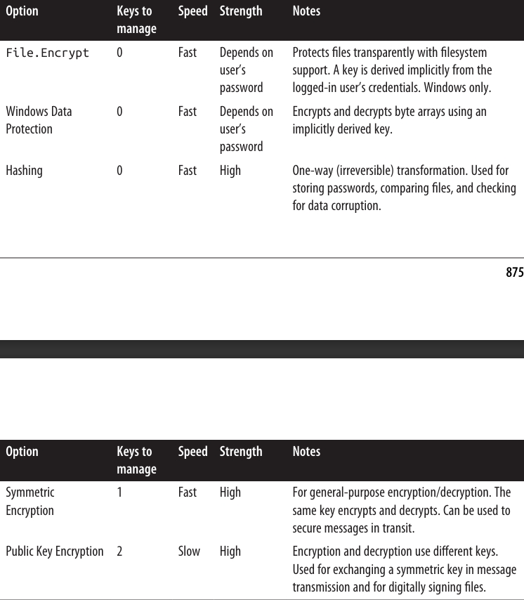
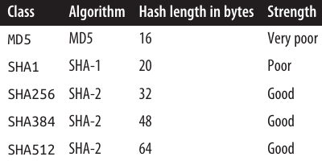
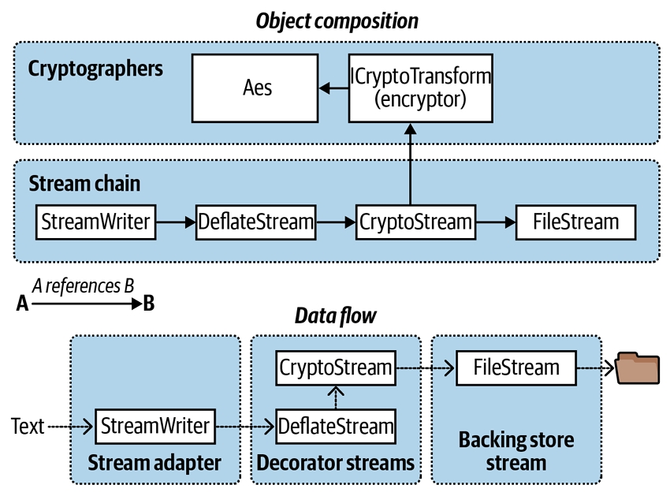

فصل بیستم: رمزنگاری
در این فصل، ما به بررسی APIهای اصلی Cryptography در .NET میپردازیم:
- Windows Data Protection API (DPAPI)
- Hashing
- Symmetric encryption
- Public key encryption and signing
انواع (Types) پوشش داده شده در این فصل در namespaceهای زیر تعریف شدهاند:
System.Security;
System.Security.Cryptography;
مروری کلی 📑
جدول ۲۰-۱ خلاصهای از گزینههای Cryptography در .NET را نشان میدهد. در بخشهای بعدی، هر یک از این موارد را به تفصیل بررسی خواهیم کرد.

پشتیبانیهای ویژهتر در .NET ✨
.NET همچنین پشتیبانیهای تخصصیتری برای ایجاد و اعتبارسنجی امضاهای مبتنی بر XML در System.Security.Cryptography.Xml و همچنین انواع (Types) مرتبط با کار با گواهیهای دیجیتال در System.Security.Cryptography.X509Certificates ارائه میدهد.
Windows Data Protection 🪟🔐
ویژگی Windows Data Protection فقط روی ویندوز در دسترس است و در سیستمعاملهای دیگر یک استثناء از نوع PlatformNotSupportedException ایجاد میکند.
در بخش “File and Directory Operations” در صفحه ۷۲۳ توضیح دادیم که چگونه میتوانید از File.Encrypt برای درخواست رمزنگاری شفاف (transparent) فایل توسط سیستمعامل استفاده کنید:
File.WriteAllText ("myfile.txt", "");
File.Encrypt ("myfile.txt");
File.AppendAllText ("myfile.txt", "sensitive data");
🔑 در این حالت، رمزنگاری از کلیدی استفاده میکند که از رمز عبور کاربر لاگینشده استخراج شده است. شما میتوانید همین کلید استخراجشده ضمنی را برای رمزنگاری یک آرایهی بایت با استفاده از Windows Data Protection API (DPAPI) بهکار بگیرید.
DPAPI از طریق کلاس ProtectedData در دسترس قرار گرفته است؛ کلاسی ساده با دو متد static:
public static byte[] Protect
(byte[] userData, byte[] optionalEntropy, DataProtectionScope scope);
public static byte[] Unprotect
(byte[] encryptedData, byte[] optionalEntropy, DataProtectionScope scope);
🔒 هر چیزی که در optionalEntropy قرار دهید به کلید اضافه میشود و امنیت آن را افزایش میدهد.
پارامتر DataProtectionScope دو گزینه دارد:
- CurrentUser → کلید از اطلاعات کاربری (credentials) کاربر فعلی استخراج میشود.
- LocalMachine → یک کلید در سطح کل سیستم (machine-wide) استفاده میشود که بین همه کاربران مشترک است.
➡️ این یعنی اگر CurrentUser انتخاب شود، دادههای رمزنگاریشده توسط یک کاربر قابل رمزگشایی توسط کاربر دیگر نخواهند بود. در حالیکه کلید LocalMachine امنیت کمتری دارد، اما برای سرویسهای ویندوز یا برنامههایی که باید تحت حسابهای مختلف کار کنند، مناسب است.
نمونهای ساده از رمزنگاری و رمزگشایی 🧩
byte[] original = {1, 2, 3, 4, 5};
DataProtectionScope scope = DataProtectionScope.CurrentUser;
byte[] encrypted = ProtectedData.Protect (original, null, scope);
byte[] decrypted = ProtectedData.Unprotect (encrypted, null, scope);
// decrypted is now {1, 2, 3, 4, 5}
🛡 Windows Data Protection امنیت متوسطی در برابر مهاجمی که دسترسی کامل به رایانه دارد فراهم میکند؛ این موضوع بستگی به قدرت رمز عبور کاربر دارد.
با LocalMachine، این روش فقط در برابر کسانی که دسترسی فیزیکی یا الکترونیکی محدود دارند مؤثر است.
Hashing 🔑📊
یک الگوریتم Hashing حجم بزرگی از دادهها را به یک کد ثابت و کوچک (hashcode) تبدیل میکند.
این الگوریتمها طوری طراحی شدهاند که حتی اگر تنها یک بیت در دادهی اصلی تغییر کند، نتیجهی hashcode کاملاً متفاوت خواهد بود.
📂 این ویژگی باعث میشود که hashing برای مقایسه فایلها یا تشخیص خرابیهای تصادفی (یا مخرب) در فایل یا جریان داده (data stream) بسیار مناسب باشد.
علاوه بر این، Hashing نوعی رمزنگاری یکطرفه محسوب میشود، زیرا بازگرداندن hashcode به داده اصلی تقریباً غیرممکن است.
به همین دلیل، ذخیرهسازی رمز عبور در پایگاه داده بهصورت hash یک روش ایمن است.
🔐 اگر پایگاه داده شما به خطر بیفتد، مهاجم به رمز عبورهای متنی ساده (plain-text) دسترسی پیدا نخواهد کرد.
برای احراز هویت، کافی است ورودی کاربر را hash کرده و با مقدار ذخیرهشده در پایگاه داده مقایسه کنید.
استفاده از ComputeHash 🖥
برای تولید hash، متد ComputeHash از یکی از زیرکلاسهای HashAlgorithm (مثل SHA1 یا SHA256) فراخوانی میشود:
byte[] hash;
using (Stream fs = File.OpenRead ("checkme.doc"))
hash = SHA1.Create().ComputeHash (fs); // SHA1 hash is 20 bytes long
متد ComputeHash همچنین یک آرایهی بایت را میپذیرد که برای hash کردن رمزهای عبور بسیار کاربردی است (روش امنتر در بخش “Hashing Passwords” در صفحه ۸۷۸ توضیح داده شده است):
byte[] data = System.Text.Encoding.UTF8.GetBytes ("stRhong%pword");
byte[] hash = SHA256.Create().ComputeHash (data);
📌 متد GetBytes در یک شیء از نوع Encoding، یک رشته (string) را به آرایهی بایت تبدیل میکند؛ متد GetString آن را برعکس برمیگرداند.
اما یک شیء Encoding نمیتواند یک آرایهی بایت رمزنگاریشده یا hash شده را به رشته برگرداند، چون دادهی scramble شده معمولاً قوانین encoding متنی را نقض میکند.
به جای آن باید از متدهای زیر استفاده کنید:
Convert.ToBase64StringConvert.FromBase64String
اینها تبدیل بین هر آرایهی بایت و یک رشته معتبر (و سازگار با XML یا JSON) را انجام میدهند.
الگوریتمهای Hash در .NET 🧮
SHA1 و SHA256 دو نمونه از زیرنوعهای HashAlgorithm هستند که توسط .NET ارائه شدهاند.
مهمترین الگوریتمها، به ترتیب افزایش امنیت عبارتاند از: …

الگوریتمهای Hash در .NET 🧮
تمامی پنج الگوریتم در پیادهسازیهای فعلی تقریباً با سرعت مشابهی اجرا میشوند، به جز SHA256 که حدود ۲ تا ۳ برابر سریعتر است (این موضوع میتواند بسته به سختافزار و سیستمعامل متفاوت باشد).
📊 بهطور تقریبی میتوانید انتظار سرعت حداقل ۵۰۰ مگابایت در ثانیه را روی یک دسکتاپ یا سرور سال ۲۰۲۴ از تمامی این الگوریتمها داشته باشید.
🔐 هرچه طول hash بیشتر باشد، احتمال collision (یعنی تولید یک hash مشابه از دو فایل متفاوت) کاهش مییابد. بنابراین:
- هنگام hash کردن رمز عبورها یا دادههای حساس امنیتی، حداقل از SHA256 استفاده کنید.
- الگوریتمهای MD5 و SHA1 از نظر امنیتی ضعیف محسوب میشوند و تنها برای محافظت در برابر خرابیهای تصادفی مناسباند، نه دستکاریهای عمدی.
در .NET 8 و بالاتر، پشتیبانی از آخرین استاندارد SHA-3 نیز اضافه شده است؛ شامل کلاسهای:
SHA3_256SHA3_384SHA3_512
الگوریتمهای SHA-3 از الگوریتمهای قبلی امنتر (و البته کندتر) هستند، اما به Windows Build 25324+ یا Linux با OpenSSL 1.1.1+ نیاز دارند.
میتوانید پشتیبانی سیستمعامل را از طریق ویژگی static به نام IsSupported در این کلاسها بررسی کنید.
Hashing Passwords 🔑🧂
الگوریتمهای SHA با طول بیشتر برای hash کردن رمز عبورها مناسباند، به شرطی که یک سیاست رمز عبور قوی اعمال کنید تا از حملهی dictionary attack جلوگیری شود.
📖 در این نوع حمله، مهاجم جدولی از رمزها ایجاد میکند که شامل hash تمام کلمات موجود در یک فرهنگ لغت است.
✅ یک تکنیک استاندارد هنگام hash کردن رمزها، استفاده از salt است:
یک دنبالهی طولانی از بایتها که ابتدا با یک تولیدکننده اعداد تصادفی به دست میآید و سپس پیش از hash شدن، با رمز عبور ترکیب میشود.
این کار دو مزیت مهم دارد:
- مهاجم باید از بایتهای salt هم اطلاع داشته باشد.
- استفاده از rainbow tables (پایگاههای دادهی از پیش محاسبهشدهی رمزها و hash آنها) بیاثر میشود؛ هرچند حملهی dictionary همچنان با قدرت محاسباتی کافی ممکن است.
Password Stretching ⏳
میتوانید امنیت را با تکنیک stretching تقویت کنید؛ یعنی با تکرار چندباره hash کردن، فرآیند تولید hash را محاسباتیتر کنید.
بهعنوان مثال:
اگر ۱۰۰ بار rehash کنید، حملهی dictionary که شاید یک ماه طول بکشد، اکنون حدود ۸ سال زمان خواهد برد.
کلاسهای زیر دقیقاً همین نوع stretching را پیادهسازی میکنند و همچنین امکان استفاده آسان از salting را فراهم میآورند:
KeyDerivationRfc2898DeriveBytesPasswordDeriveBytes
از میان آنها، بهترین انتخاب:
KeyDerivation.Pbkdf2 ✅
مثال:
byte[] encrypted = KeyDerivation.Pbkdf2 (
password: "stRhong%pword",
salt: Encoding.UTF8.GetBytes ("j78Y#p)/saREN!y3@"),
prf: KeyDerivationPrf.HMACSHA512,
iterationCount: 100,
numBytesRequested: 64);
📦 KeyDerivation.Pbkdf2 نیازمند نصب بستهی NuGet به نام:
Microsoft.AspNetCore.Cryptography.KeyDerivation است.
اگرچه این کلاس در namespace مربوط به ASP.NET Core قرار دارد، اما هر برنامهی .NET میتواند از آن استفاده کند.
Symmetric Encryption 🔒⚖️
در رمزنگاری متقارن (Symmetric Encryption)، یک کلید یکسان برای رمزنگاری (encryption) و رمزگشایی (decryption) استفاده میشود.
کتابخانه پایهی .NET (BCL) چهار الگوریتم متقارن ارائه میدهد که در میان آنها، Rijndael (تلفظ: "رایندال" یا "ریندال") بهترین گزینه است؛ دیگر الگوریتمها عمدتاً برای سازگاری با برنامههای قدیمی استفاده میشوند.
✨ Rijndael سریع و امن است و در دو پیادهسازی ارائه میشود:
RijndaelAes
این دو تقریباً مشابهاند؛ با این تفاوت که Aes اجازه نمیدهد اندازهی بلوک (block size) را تغییر دهید و رمزنگاری را ضعیف کنید.
🔐 تیم امنیت CLR استفاده از Aes را توصیه میکند.
هر دو الگوریتم کلیدهای متقارن با طول ۱۶، ۲۴ یا ۳۲ بایت را پشتیبانی میکنند که همگی در حال حاضر ایمن محسوب میشوند.
نمونه رمزنگاری 📝
رمزنگاری یک آرایهی بایت هنگام نوشتن در فایل با کلید ۱۶ بایتی:
byte[] key = {145,12,32,245,98,132,98,214,6,77,131,44,221,3,9,50};
byte[] iv = {15,122,132,5,93,198,44,31,9,39,241,49,250,188,80,7};
byte[] data = { 1, 2, 3, 4, 5 }; // دادهای که رمزنگاری میکنیم.
using (SymmetricAlgorithm algorithm = Aes.Create())
using (ICryptoTransform encryptor = algorithm.CreateEncryptor (key, iv))
using (Stream f = File.Create ("encrypted.bin"))
using (Stream c = new CryptoStream (f, encryptor, CryptoStreamMode.Write))
c.Write (data, 0, data.Length);
نمونه رمزگشایی 🔓
byte[] key = {145,12,32,245,98,132,98,214,6,77,131,44,221,3,9,50};
byte[] iv = {15,122,132,5,93,198,44,31,9,39,241,49,250,188,80,7};
byte[] decrypted = new byte[5];
using (SymmetricAlgorithm algorithm = Aes.Create())
using (ICryptoTransform decryptor = algorithm.CreateDecryptor (key, iv))
using (Stream f = File.OpenRead ("encrypted.bin"))
using (Stream c = new CryptoStream (f, decryptor, CryptoStreamMode.Read))
for (int b; (b = c.ReadByte()) > -1;)
Console.Write (b + " "); // خروجی: 1 2 3 4 5
➡️ در این مثال، یک کلید ۱۶ بایتی بهطور تصادفی ساخته شده است. اگر کلید اشتباه برای رمزگشایی استفاده شود، CryptoStream یک استثناء از نوع CryptographicException ایجاد میکند. گرفتن این استثناء تنها راه برای بررسی درستی کلید است.
نقش IV (Initialization Vector) 🎲
علاوه بر کلید، ما یک IV (Initialization Vector) هم ایجاد کردیم.
این دنبالهی ۱۶ بایتی بخشی از الگوریتم رمزنگاری است؛ شبیه به کلید، اما محرمانه محسوب نمیشود.
📩 اگر پیامی رمزنگاریشده را منتقل کنید، معمولاً IV را بهصورت plain text (مثلاً در هدر پیام) ارسال کرده و در هر پیام آن را تغییر میدهید.
این کار باعث میشود هر پیام رمزنگاریشده با پیامهای قبلی غیرقابل تشخیص باشد—even اگر نسخهی متنی (unencrypted) آنها مشابه یا یکسان باشند.
- اگر نمیخواهید از IV استفاده کنید، میتوانید یک مقدار ۱۶ بایتی یکسان را هم بهعنوان کلید و هم بهعنوان IV به کار ببرید.
⚠️ اما استفاده از یک IV ثابت در چند پیام، رمزنگاری را ضعیف کرده و ممکن است آن را قابل نفوذ کند.
نقش کلاسها 👨🔧👨🏫
- Aes → ریاضیدان است؛ الگوریتم رمزنگاری و عملیات Encryptor/Decryptor را اعمال میکند.
- CryptoStream → لولهکش است؛ مدیریت جریان داده (stream plumbing) را بر عهده دارد.
شما میتوانید Aes را با یک الگوریتم متقارن دیگر جایگزین کنید، اما همچنان از CryptoStream استفاده کنید.
🔄 CryptoStream دوطرفه است؛ بسته به انتخاب شما (CryptoStreamMode.Read یا CryptoStreamMode.Write) میتواند برای خواندن یا نوشتن استفاده شود.
هر دو Encryptor و Decryptor توانایی خواندن و نوشتن دارند و چهار ترکیب ممکن ایجاد میکنند—این میتواند گاهی موجب گیج شدن شما شود!
📌 اگر مطمئن نیستید:
- برای رمزنگاری از Write شروع کنید.
- برای رمزگشایی از Read شروع کنید.
این حالت معمولاً طبیعیترین انتخاب است.
تولید کلید و IV تصادفی 🎲
برای تولید یک کلید یا IV تصادفی، از RandomNumberGenerator در System.Cryptography استفاده کنید.
اعدادی که این کلاس تولید میکند واقعاً غیرقابل پیشبینی و cryptographically strong هستند (برخلاف System.Random).
مثال:
byte[] key = new byte [16];
byte[] iv = new byte [16];
RandomNumberGenerator rand = RandomNumberGenerator.Create();
rand.GetBytes (key);
rand.GetBytes (iv);
از .NET 6 به بعد:
byte[] key = RandomNumberGenerator.GetBytes (16);
byte[] iv = RandomNumberGenerator.GetBytes (16);
اگر کلید و IV مشخص نکنید، مقادیر تصادفی قوی بهطور خودکار تولید میشوند.
میتوانید این مقادیر را از طریق ویژگیهای Key و IV در شیء Aes دریافت کنید.
🔐 رمزنگاری در حافظه
از .NET 6 به بعد، میتوانید برای سادهسازی فرآیند رمزنگاری و رمزگشایی آرایههای بایت از متدهای EncryptCbc و DecryptCbc استفاده کنید:
public static byte[] Encrypt (byte[] data, byte[] key, byte[] iv)
{
using Aes algorithm = Aes.Create();
algorithm.Key = key;
return algorithm.EncryptCbc(data, iv);
}
public static byte[] Decrypt (byte[] data, byte[] key, byte[] iv)
{
using Aes algorithm = Aes.Create();
algorithm.Key = key;
return algorithm.DecryptCbc(data, iv);
}
⚙️ معادل سازگار با همه نسخههای .NET
در نسخههای قدیمیتر، باید از ICryptoTransform و CryptoStream استفاده کنیم:
public static byte[] Encrypt (byte[] data, byte[] key, byte[] iv)
{
using (Aes algorithm = Aes.Create())
using (ICryptoTransform encryptor = algorithm.CreateEncryptor(key, iv))
return Crypt(data, encryptor);
}
public static byte[] Decrypt (byte[] data, byte[] key, byte[] iv)
{
using (Aes algorithm = Aes.Create())
using (ICryptoTransform decryptor = algorithm.CreateDecryptor(key, iv))
return Crypt(data, decryptor);
}
static byte[] Crypt (byte[] data, ICryptoTransform cryptor)
{
MemoryStream m = new MemoryStream();
using (Stream c = new CryptoStream(m, cryptor, CryptoStreamMode.Write))
c.Write(data, 0, data.Length);
return m.ToArray();
}
🔎 توجه: حالت CryptoStreamMode.Write هم برای رمزنگاری و هم برای رمزگشایی مناسب است، زیرا در هر دو حالت دادهها را به داخل یک MemoryStream تازه "پوش" میکنیم.
📝 نسخه مخصوص رشتهها (String)
public static string Encrypt (string data, byte[] key, byte[] iv)
{
return Convert.ToBase64String(
Encrypt(Encoding.UTF8.GetBytes(data), key, iv));
}
public static string Decrypt (string data, byte[] key, byte[] iv)
{
return Encoding.UTF8.GetString(
Decrypt(Convert.FromBase64String(data), key, iv));
}
نمونه استفاده:
byte[] key = new byte[16];
byte[] iv = new byte[16];
var cryptoRng = RandomNumberGenerator.Create();
cryptoRng.GetBytes(key);
cryptoRng.GetBytes(iv);
string encrypted = Encrypt("Yeah!", key, iv);
Console.WriteLine(encrypted); // R1/5gYvcxyR2vzPjnT7yaQ==
string decrypted = Decrypt(encrypted, key, iv);
Console.WriteLine(decrypted); // Yeah!
⛓️ زنجیرهسازی استریمها (Chaining Streams)
از آنجایی که CryptoStream یک دکوریتور است، میتوانید آن را با سایر استریمها زنجیره کنید. در مثال زیر، یک متن فشرده و رمزنگاریشده را در فایل ذخیره کرده و سپس بازیابی میکنیم:
byte[] key = new byte[16];
byte[] iv = new byte[16];
var cryptoRng = RandomNumberGenerator.Create();
cryptoRng.GetBytes(key);
cryptoRng.GetBytes(iv);
using (Aes algorithm = Aes.Create())
{
using (ICryptoTransform encryptor = algorithm.CreateEncryptor(key, iv))
using (Stream f = File.Create("serious.bin"))
using (Stream c = new CryptoStream(f, encryptor, CryptoStreamMode.Write))
using (Stream d = new DeflateStream(c, CompressionMode.Compress))
using (StreamWriter w = new StreamWriter(d))
await w.WriteLineAsync("Small and secure!");
using (ICryptoTransform decryptor = algorithm.CreateDecryptor(key, iv))
using (Stream f = File.OpenRead("serious.bin"))
using (Stream c = new CryptoStream(f, decryptor, CryptoStreamMode.Read))
using (Stream d = new DeflateStream(c, CompressionMode.Decompress))
using (StreamReader r = new StreamReader(d))
Console.WriteLine(await r.ReadLineAsync()); // Small and secure!
}
📌 در این مثال، همه متغیرهای یکحرفی بخشی از زنجیره هستند. اجزای اصلی مثل algorithm، encryptor و decryptor در واقع به CryptoStream کمک میکنند تا عملیات رمزنگاری و رمزگشایی انجام شود.
⚡ نکته مهم: زنجیرهسازی استریمها به این شکل، باعث میشود که صرفنظر از اندازه فایل یا داده، مصرف حافظه بسیار کم باقی بماند.

🧹 پاکسازی اشیای رمزنگاری (Disposing Encryption Objects)
وقتی یک CryptoStream را Dispose میکنید، کش داخلی آن به استریم زیرین منتقل (Flush) میشود. این کش داخلی برای الگوریتمهای رمزنگاری لازم است، چون آنها دادهها را به صورت بلوکهای داده پردازش میکنند، نه بایت به بایت.
🔎 نکته:
- متد Flush در CryptoStream هیچ کاری انجام نمیدهد.
- برای فلاش کردن بدون Dispose کردن باید از FlushFinalBlock استفاده کنید. این متد فقط یک بار قابل فراخوانی است و بعد از آن دیگر نمیتوانید دادهای بنویسید.
ما همچنین اشیای Aes و ICryptoTransform (یعنی algorithm, encryptor, decryptor) را Dispose میکنیم. وقتی این Transformها Dispose شوند، کلید متقارن و دادههای مرتبط از حافظه پاک میشوند. این کار جلوی کشف کلید توسط نرمافزارهای مخرب را میگیرد.
به Garbage Collector نمیتوان اعتماد کرد، چون آن فقط حافظه را آزاد میکند، نه اینکه بایتها را صفر کند.
👉 سادهترین راه برای Dispose کردن یک شیء Aes خارج از using، فراخوانی متد Clear است.
متد Dispose آن به صورت explicit پیادهسازی شده تا نشان دهد این Dispose غیرمعمول است (پاک کردن حافظه بهجای آزادسازی منابع unmanaged).
🔒 نکات امنیتی برای جلوگیری از نشت دادههای حساس
- ❌ از رشتهها (string) برای اطلاعات امنیتی استفاده نکنید (رشتهها تغییرناپذیرند و مقدارشان هرگز قابل پاک کردن نیست).
- ✅ بلافاصله بعد از بیاستفاده شدن، بافرها را بازنویسی کنید (مثلاً با
Array.Clear).
🔑 مدیریت کلید (Key Management)
مدیریت کلید بخش حیاتی امنیت است: اگر کلیدها لو بروند، دادهها هم در خطر خواهند بود.
- باید مشخص کنید چه کسانی به کلیدها دسترسی داشته باشند.
- کلیدها را در برابر دسترسی غیرمجاز محافظت کنید.
- نسخههای پشتیبان داشته باشید (برای مواقع خرابی سختافزار).
🚫 توصیه نمیشود کلیدها را سختکد (hardcode) کنید، چون ابزارهای سادهای برای دیکامپایل اسمبلیها وجود دارد.
✅ راه بهتر در ویندوز: تولید کلید تصادفی برای هر نصب و ذخیره آن با استفاده از Windows Data Protection.
در ابر (Cloud)، سرویسهایی مثل Azure و AWS سیستمهای مدیریت کلید (KMS) ارائه میدهند که قابلیتهایی مثل ثبت لاگ دسترسیها (audit trails) دارند.
🔐 رمزنگاری کلید عمومی (Public-Key Encryption and Signing)
رمزنگاری کلید عمومی نامتقارن (asymmetric) است؛ یعنی برای رمزنگاری و رمزگشایی از کلیدهای متفاوت استفاده میشود:
- 🔑 کلید عمومی (public key) → برای رمزنگاری
- 🔒 کلید خصوصی (private key) → برای رمزگشایی
ویژگی مهم:
- از روی کلید عمومی نمیتوان کلید خصوصی را محاسبه کرد.
- اگر کلید خصوصی گم شود، دادههای رمزنگاریشده بازیابی نمیشوند.
- اگر کلید خصوصی لو برود، کل سیستم رمزنگاری بیفایده میشود.
📡 مثال: ارتباط امن دو کامپیوتر از طریق کلید عمومی
فرض کنید Origin میخواهد به Target پیام محرمانه بفرستد:
- Target یک جفت کلید عمومی/خصوصی میسازد و کلید عمومی را برای Origin میفرستد.
- Origin پیام محرمانه را با کلید عمومی Target رمزنگاری کرده و ارسال میکند.
- Target پیام را با کلید خصوصی خودش رمزگشایی میکند.
👀 شنودکننده (eavesdropper) فقط اینها را میبیند:
- کلید عمومی Target
- پیام رمزنگاریشده با آن کلید
اما بدون کلید خصوصی Target، نمیتواند پیام را رمزگشایی کند.
⚠️ نکته امنیتی: حمله مرد میانی (MITM)
Origin مطمئن نیست که Target واقعی است یا فرد مخرب!
راهحل:
- از قبل کلید عمومی Target را بشناسد.
- یا کلید عمومی را از طریق یک گواهی دیجیتال (digital certificate) معتبر تأیید کند.
🚀 ترکیب کلید عمومی و متقارن
رمزنگاری کلید عمومی کند است و اندازه پیام محدود دارد.
به همین دلیل معمولاً پیام اولیه فقط شامل یک کلید متقارن تازه است.
📌 روند:
- Origin → کلید متقارن را با کلید عمومی Target رمز میکند و میفرستد.
- Target → کلید متقارن را با کلید خصوصیاش رمزگشایی میکند.
- بقیه پیامها → با الگوریتم متقارن (سریعتر) رمز میشوند.
اگر برای هر جلسه یک جفت کلید عمومی/خصوصی تازه ساخته شود، امنیت بالاتر میرود چون دیگر نیازی به ذخیرهسازی کلیدها در هیچکدام از کامپیوترها نیست.
🛑 محدودیت کلید عمومی
الگوریتمهای کلید عمومی فقط پیامهایی را رمز میکنند که از خود کلید کوچکتر باشند.
بنابراین برای پیامهای بزرگ (بیشتر از نصف اندازه کلید)، استثنا (Exception) پرتاب میشود.
🔑 کلاس RSA در .NET
در .NET چندین الگوریتم نامتقارن وجود دارد که RSA محبوبترین آنهاست.
🔒 رمزنگاری و رمزگشایی با RSA
byte[] data = { 1, 2, 3, 4, 5 }; // دادهای که میخواهیم رمز کنیم
using (var rsa = new RSACryptoServiceProvider())
{
byte[] encrypted = rsa.Encrypt(data, true);
byte[] decrypted = rsa.Decrypt(encrypted, true);
}
چون هیچ کلید عمومی یا خصوصیای مشخص نکردیم، فراهمکننده رمزنگاری بهطور خودکار یک جفت کلید (Key Pair) با طول پیشفرض ١٠٢٤ بیت ساخت.
میتوانید کلیدهای بلندتر (در مضارب ٨ بایت) بخواهید. برای برنامههای امنیتی حساس، استفاده از ٢٠٤٨ بیت توصیه میشود:
var rsa = new RSACryptoServiceProvider(2048);
ساخت کلید محاسباتی سنگین است (حدود ١٠ میلیثانیه طول میکشد). به همین دلیل، پیادهسازی RSA تولید کلید را تا زمانی که واقعاً لازم باشد (مثلاً هنگام فراخوانی Encrypt) به تأخیر میاندازد. این فرصت را میدهد که اگر کلید موجودی دارید، آن را بارگذاری کنید.
💾 ذخیرهسازی و بارگذاری کلیدها
- متدهای ImportCspBlob و ExportCspBlob: بارگذاری/ذخیره کلید در قالب آرایه بایت.
- متدهای FromXmlString و ToXmlString: همین کار را در قالب رشته (XML) انجام میدهند.
پارامتر بولی تعیین میکند که کلید خصوصی هم ذخیره شود یا نه.
مثال: ساخت یک جفت کلید و ذخیره آن روی دیسک:
using (var rsa = new RSACryptoServiceProvider())
{
File.WriteAllText("PublicKeyOnly.xml", rsa.ToXmlString(false));
File.WriteAllText("PublicPrivate.xml", rsa.ToXmlString(true));
}
چون کلیدی نداشتیم، اولین بار ToXmlString مجبور شد یک جفت کلید تازه بسازد.
بارگذاری مجدد و استفاده از آنها:
byte[] data = Encoding.UTF8.GetBytes("Message to encrypt");
string publicKeyOnly = File.ReadAllText("PublicKeyOnly.xml");
string publicPrivate = File.ReadAllText("PublicPrivate.xml");
byte[] encrypted, decrypted;
using (var rsaPublicOnly = new RSACryptoServiceProvider())
{
rsaPublicOnly.FromXmlString(publicKeyOnly);
encrypted = rsaPublicOnly.Encrypt(data, true);
// خطا: چون کلید خصوصی نداریم نمیتوانیم Decrypt کنیم:
// decrypted = rsaPublicOnly.Decrypt(encrypted, true);
}
using (var rsaPublicPrivate = new RSACryptoServiceProvider())
{
rsaPublicPrivate.FromXmlString(publicPrivate);
decrypted = rsaPublicPrivate.Decrypt(encrypted, true); // موفقیتآمیز
}
🖊️ امضای دیجیتال (Digital Signing)
الگوریتمهای کلید عمومی برای امضای دیجیتال هم استفاده میشوند.
امضا مثل Hash است، با این تفاوت که تولید آن به کلید خصوصی نیاز دارد و جعلپذیر نیست. کلید عمومی برای تأیید امضا استفاده میشود.
مثال:
byte[] data = Encoding.UTF8.GetBytes("Message to sign");
byte[] publicKey;
byte[] signature;
object hasher = SHA1.Create(); // الگوریتم هش انتخابی ما
// تولید جفت کلید جدید و امضای داده:
using (var publicPrivate = new RSACryptoServiceProvider())
{
signature = publicPrivate.SignData(data, hasher);
publicKey = publicPrivate.ExportCspBlob(false); // گرفتن کلید عمومی
}
// ساخت RSA جدید با کلید عمومی و تست امضا:
using (var publicOnly = new RSACryptoServiceProvider())
{
publicOnly.ImportCspBlob(publicKey);
Console.Write(publicOnly.VerifyData(data, hasher, signature)); // True
// تغییر داده و تست دوباره:
data[0] = 0;
Console.Write(publicOnly.VerifyData(data, hasher, signature)); // False
// خطا: چون کلید خصوصی نداریم نمیتوانیم امضا تولید کنیم:
signature = publicOnly.SignData(data, hasher);
}
⚙️ جزئیات عملکرد امضا
امضا با این مراحل انجام میشود:
- داده ابتدا هش میشود.
- الگوریتم نامتقارن (RSA) روی هش اعمال میشود.
از آنجا که هش اندازه کوچکی دارد، امضای اسناد بزرگ سریع انجام میشود (چون RSA بهتنهایی پرهزینهتر است).
میتوانید هش را خودتان محاسبه کنید و سپس از SignHash بهجای SignData استفاده کنید:
using (var rsa = new RSACryptoServiceProvider())
{
byte[] hash = SHA1.Create().ComputeHash(data);
signature = rsa.SignHash(hash, CryptoConfig.MapNameToOID("SHA1"));
}
SignHash باید بداند از چه الگوریتمی برای هش استفاده کردهاید. متد CryptoConfig.MapNameToOID این اطلاعات را از یک نام ساده مثل "SHA1" فراهم میکند.
📏 اندازه امضا: خروجی امضا با اندازه کلید برابر است. در حال حاضر الگوریتمی که امضای امنی کوچکتر از ١٢٨ بایت تولید کند (برای مثال کد فعالسازی محصول) وجود ندارد.
📜 اعتماد به کلید عمومی
برای اینکه امضا معتبر باشد، گیرنده باید کلید عمومی فرستنده را بشناسد و به آن اعتماد کند. این میتواند از راههای زیر انجام شود:
- ارتباط قبلی
- پیکربندی از پیش
- یا استفاده از گواهی دیجیتال (site certificate)
🔐 یک گواهی دیجیتال رکورد الکترونیکی کلید عمومی و نام فرستنده است که خودش توسط یک مرجع معتبر مستقل امضا شده است.
📦 فضای نام System.Security.Cryptography.X509Certificates انواع لازم برای کار با گواهیها را فراهم میکند.